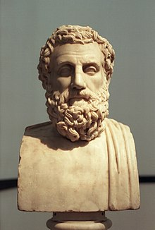
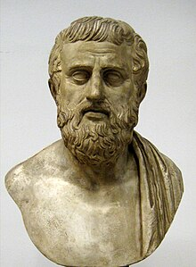
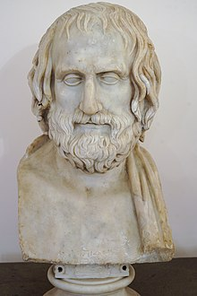

Il teatro greco nacque ad Atene nel VI secolo a.C. nell’ambito delle feste religiose con la messinscena della tragedia che, a sua volta, ispirò la creazione della commedia greca.
Questi due tipi di spettacolo erano straordinariamente popolari e la loro rappresentazione si diffuse nel Mediterraneo e influenzò il teatro ellenistico e romano.
A riprova del loro inossidabile successo, le opere di grandi drammaturghi come Sofocle, Euripide e Aristofane hanno costituito le basi su cui si fonda tutto il teatro moderno. Allo stesso modo, l'architettura dei teatri dell'antica Grecia ha continuato ad ispirare lo stile dei teatri fino ai giorni nostri..

Eschilo (524 a.C.-455 a.C.) è stato il primo dei grandi drammaturghi classici di Atene, che ha elevato l'arte emergente della tragedia a grandi vette di poesia e potenza teatrale.
Eschilo crebbe nel periodo turbolento in cui la democrazia ateniese, dopo essersi liberata della sua tirannia, dovette mettersi alla prova contro i politici egoisti in patria.
Lo stesso Eschilo prese parte alle prime lotte della sua città contro i Persiani.
I cronisti greci successivi credettero che Eschilo avesse 35 anni nel 490 a.C. quando partecipò alla battaglia di Maratona, in cui gli ateniesi respinsero per la prima volta i persiani.
Eschilo scrisse circa 90 opere teatrali, tra cui drammi satirici e tragedie; di questi, circa 80 titoli sono noti. Solo sette tragedie sono sopravvissute interamente. Un resoconto, forse basato sulle liste ufficiali, assegna ad Eschilo 13 primi premi, o vittorie;
ciò significherebbe che ben oltre la metà delle sue opere ha vinto, dal momento che sono stati giudicati set di quattro opere piuttosto che separate.

Sofocle era un drammaturgo greco che visse dal 496 al 406 a.C. circa. Scrisse oltre 100 opere teatrali e fu uno dei tre famosi tragediografi greci (insieme a Eschilo ed Euripide).
A lui si attribuisce il merito di essersi discostato dal formato tipico di una tragedia: aumentò il numero di attori parlanti, aumentò il numero di membri del coro e utilizzò scenografie dipinte.
Delle sue otto opere (sette intere, una frammentata) che rimangono oggi, la più famosa è Edipo Re (Oedipus Rex), che è noto per la sua impressionante costruzione e l'uso di espedienti drammatici.
Sofocle è anche rinomato per il suo uso dell'ironia tragica e della metafora estesa. Sofocle influenzò in modo fenomenale la drammaturgia. L'introduzione di un terzo personaggio parlante è stata rivoluzionaria, così come l'uso di scenografie dipinte.
Ha anche avuto un impatto su Aristotele, che fa riferimento a Edipo Re numerose volte nel suo libro sulla Poietica.

Euripide (484 a.C.–406 a.C.) è stato l'ultimo dei tre grandi drammaturghi tragici dell'Atene classica. E' possibile ricostruire solo la biografia più abbozzata di Euripide.
Si dice che si sia associato a Protagora, Anassagora e altri sofisti e filosofi-scienziati. Tuttavia, la sua conoscenza di nuove idee gli portò irrequietezza piuttosto che convinzione, e il suo atteggiamento interrogativo nei confronti della religione greca tradizionale si riflette in alcune delle sue opere teatrali.
Le opere di Euripide mostrano il suo atteggiamento iconoclasta e razionalizzante sia nei confronti delle credenze religiose che delle antiche leggende e miti che costituivano il soggetto tradizionale del dramma greco. Queste leggende sembrano essere state per lui una mera raccolta di storie senza alcuna particolare autorità.
Sembra anche il suo rifiuto degli dèi della teologia omerica, che spesso dipinge come irrazionali, petulanti e singolarmente disinteressati a concedere la "giustizia divina".
Euripide differiva da Eschilo e Sofocle nel far derivare i tragici destini dei suoi personaggi quasi interamente dalla loro natura imperfetta e dalle loro passioni incontrollate.
Il fato, il disordine, l'irrazionalità e l'immoralità umana spesso non portano a una riconciliazione o a una risoluzione morale, ma a una sofferenza apparentemente insignificante che viene guardata con indifferenza dagli dèi.
La forza di questo tipo di dramma risiede nelle situazioni spaventose e spaventose che crea e negli effetti emotivi melodrammatici, persino sensazionali, delle tragiche crisi dei suoi personaggi. Data questa forte tensione di realismo psicologico, Euripide mostra momenti di brillante intuizione dei suoi personaggi, soprattutto nelle scene d'amore e di follia.